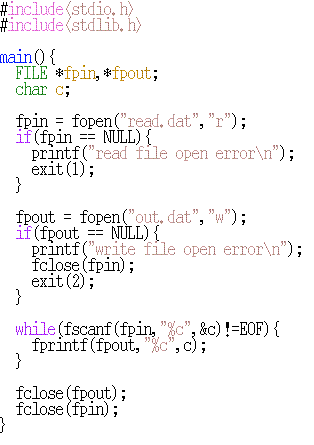
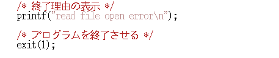

/home/course/prog1/public_html/2014/ex/ex03/より、以下のファイルをコピーしておくこと。
read.dat, coord.in, data.in, data.out, text2.in
number00.in number01.in number02.in number03.in
基本問題(50点)
以下のプログラムを入力して、
main 関数の中の全ての行（ }など記号のみの行は除く）にコメントを付けること。 if 文には、どんな時に条件が真になるのかもコメントに記載すること。
(提出ファイル名: prog01.c)コメント付加の例：

prog01.c を変更して、以下のようなプログラムを作成せよ。
(提出ファイル名: prog02.c)
data.in をファイルとして読み込み、
各処理から出力される３つのデータを、順にファイル prog02.out に書き込むこととする。
入力データの文字数は1000文字より少ないものとする。
また、読み込みは何度も繰り返さず、１回だけ行うものとする
（読み込んだデータは文字配列（ハンドアウトLec03-19, 20参照）に格納しておく）。
大文字化、小文字化等は、自分で関数を作って使用することとするが、
過去の演習で作成した関数を修正して再利用してもよい（但し自分で作ったものに限る）。
応用問題(50点)
与えられた３次元座標データのうち、
・ 原点から最も近いものと、
・ 原点から最も遠いもの
を発見するプログラムを以下の手順で作成する。
（coord.inの内容） 1.9 3.4 4.3 0.7 1.0 2.1 1.2 3.4 6.1 3.1 1.9 0.5 0.3 5.2 2.8 3.5 2.1 0.2 4.4 2.2 1.1 2.7 2.1 2.3 3.1 1.2 1.3 （coord.outの内容） max : 1.2 3.4 6.1 (7.1) min : 0.7 1.0 2.1 (2.4)
（data.in の内容） SPIM/SAL is a port, to the Apple Macintosh Personal Computer, of SPIM, a MIPS R2000/3000 simulator that was written by James Larus for instructional use at the University of Wisconsin Computer Sciences Departement. Three other versions of SPIM exist: a character-cell terminal version for Unix called "spim", an X windows version for Unix called "xspim", and a version for PC's running WIN32S, also called "SPIM/SAL." These versions are not identical, but they are descended from a common ancestor and offer the same general functionality. See the end of this document for information about obtaining the different versions of SPIM.
（data.outの内容） .MIPS fo snoisrev tnereffid eht gniniatbo tuoba noitamrofni rof tnemucod siht fo dne eht eeS .ytilanoitcnuf lareneg emas eht reffo dna rotsecna nommoc a morf dednecsed era yeht tub ,lacitnedi ton era snoisrev esehT ".LAS/MIPS" dellac osla ,S23NIW gninnur s'CP rof noisrev a dna ,"mipsx" dellac xinU rof noisrev swodniw X na ,"mips" dellac xinU rof noisrev lanimret llec-retcarahc a :tsixe MIPS fo snoisrev rehto eerhT .tnemetrapeD secneicS retupmoC nisnocsiW fo ytisrevinU eht ta esu lanoitcurtsni rof suraL semaJ yb nettirw saw taht rotalumis 0003/0002R SPIM a ,MIPS fo ,retupmoC lanosreP hsotnicaM elppA eht ot ,trop a si LAS/MIPSprog04b.cの実行例：
% ./a.out Two files are identical. （ファイルが一致した場合） % ./a.out Two files are different at *** （ファイル不一致：何バイト目で相違が見つかったか表示）
ボーナス問題(10点)
昇順（小さい順）に並んだ数字が入っているファイルが2つある。 この2つのファイルに入っている数字をすべてあわせて１つにし、 昇順に並べて標準出力に出力するプログラムを作成する。 ２つのファイルの長さは異なり、値はいくつ入っているかわからない。 但し、それぞれの値は正の数であり、int型に格納できる大きさであるとする。
2つのファイルのファイル名は、コマンド名の後に与えることとする。
./a.out number00.in number01.in
注：実行ファイル名を a.out 以外にするには、gccに「-o 名前」を付ける。 プログラミング入門ハンドアウトLec13-2を見よ。（プログラムの中身を示す「merge」等がよいだろう） また、実行例のようにコマンドラインオプションでファイル名などを読み込む方法は、今後第６回で学ぶ （Lec06-11,-12, -13を見よ）。
| number00.in | number01.in | 出力結果 |
|
3 4 6 22 30 38 65 80 85 88 90 92 94 |
7 10 11 24 40 52 65 80 |
3 4 6 7 10 11 22 24 30 38 40 52 65 65 80 80 85 88 90 92 94 |
2つのファイルは昇順に並んでいるので、 まず、両方のファイルから一つずつ数字を読み込む。 ループの中で、 読み込んだ2つの数字の小さいほうを出力するとともに、 出力した数字を持っていたファイルからもう一つ数字を読み込む。 これを繰り返していると、ファイルの終端に到達したときに 片方のファイルの読み込に失敗する。 失敗はfscanfで検出し、このファイルからの読み込みをやめる （fscanfは入力が終了して読み込めない場合に負の値（EOF）を返す ので、これを利用するとよい）。 両方のファイルの読み込みに失敗したら処理の終了である。
出力結果は大きくなるので、リダイレクトを用いると、 結果を確認しやすい。
./a.out number00.in number01.in > myresult.outこの例ではファイル「myresult.out」に結果が出力される。
Unixコマンドで、作成するプログラムと同じ結果を得るためには、
cat number00.in number01.in | sort -n > cmdresult.outとするとファイル「cmdresult.out」に結果が入る。
自分のプログラムに間違いがないかを確かめるためには、 これら二つのファイルを比較すればよい。目で比較すると大変なので、 以下のコマンドを利用する。
diff myresult.out cmdresult.outdiffは2つのファイルの内容が異なっていた場合、 異なる部分の位置と内容を標準出力に出力する。 内容が一致していた場合は何も出力しない。 つまり、上のコマンドを実行した結果、 何も出力されない場合は自分のプログラムが正しいことになる。